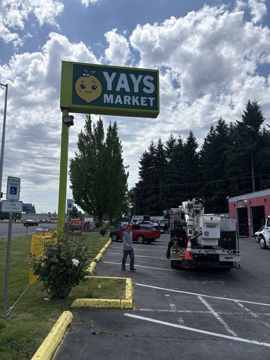

Design & Permit Drawings
Scaled elevations, site plans, sign details and permit-ready packages.

Commercial sign partner · Portland metro
From permit-ready drawings to bucket-truck field service, Union Sign Company helps businesses move commercial sign projects from concept to completion.
One experienced partner
We connect the technical office work with the real jobsite: design, permit coordination, surveys, installation, electrical troubleshooting and closeout documentation.
Scaled elevations, site plans, sign details and permit-ready packages.
Local requirements, revisions and engineering coordination where required.
Storefront, monument, pole/pylon and dimensional-letter installation.
Electrical repair, LED retrofits, surveys and bucket-truck support.
Flagship capability
Our drawing packages are developed around the building, sign type, attachment method, access conditions and local requirements—not just the rendering.
Commercial capabilities
Each capability is paired with field imagery so customers can immediately understand the kind of work Union Sign Company performs.
Building-mounted, freestanding and dimensional sign installation with access planning and field coordination.
Troubleshooting illuminated signs, wiring, power supplies, controls and sign circuits.
Lighting upgrades focused on visibility, serviceability and reduced maintenance.
Elevated access for service, repair, survey, lighting, installation and removals.

Field support for freestanding identification, tenant panels and elevated sign work.
Professional documentation for project planning, landlord review and permit submittal.
Sign types
The site now separates services from sign types, helping customers quickly recognize the kind of sign they need.
Actual Union Sign Company work
We are replacing generic imagery with completed Union Sign Company work as the project library is built out.
Commercial storefront field work using Union Sign Company access equipment.
Freestanding retail identification and elevated sign work.
Building sign installation with equipment and field coordination.
Local response. Regional capability.
Commercial design, permitting coordination, installation and service throughout Oregon and Washington.
Start with the project details
Send the address, scope, photos and plans. We’ll help identify the next step.